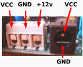
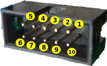
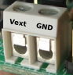
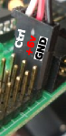
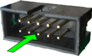
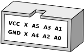

SkyControl:Hardware
De WikiRobotics
Contenido
[ocultar]Introducción
{kind=link}
La SKYCONTROL es una tarjeta entrenadora para el microcontroladores PIC 16F877A de 44 pines. Se trata de un sistema de desarrollo hardware muy fácil de usar, con el que se pueden implementar robots y sistemas domóticos. Para la comunicación con el PC se utiliza un puerto USB.
Es la tarjeta empleada en el robot Taller_FlatBot.
Características generales
Características técnicas
- Microcontroladores PIC de 44 pines 16F877A.
- Alimentación: entre 4.5 y 6 voltios
- Conector alimentación: clemas y jack
- 4 pines para la conexión directa de periféricos I2C.
- Resistencias de Pull-Up de 4k7 del I2C
- Cristal de 20MHz
- Reset hardware mediante señal DTR del la conexión RS232 (se activa/desactiva mediante un jumper)
- Alimentación (VCC) y masa (GND) en todos los conectores acodados para la fácil conexión de periféricos
Disposición de Componentes
{kind=link}
- En total hay dos conectores acodados de 10 pines:
- Sensores: Pines R5 al R7 del puerto b del PIC
- Puerto D: Pines del puerto d del PIC
- 3 conectores de tres pines para los servos
- Pulsador para Reset
- Pulsador para pruebas (conectado al pin RB0)
- Led de pruebas (conectado al pin RB1)
- Alimentación: mediante conector tipo jack, clema doble o directamente desde el bus USB.
- Clema doble para la alimentación de los servos (opcional)
- Conector USB tipo-B para la conexión serie
- Conector Molex de 5 vías para la conexión del ICD2
| Alimentación | Puerto D | Vmot | Servos |
|---|---|---|---|
|  |
 |
 |
 |
{kind=link}
{kind=link}
{kind=link}
{kind=link}
Jumpers de configuración
En la SkyControl existen 6 jumpers que permiten configurar su funcionamiento. Todos ellos son de tres pines. Se puede colocar en dos posiciones posibles, uniendo los pines (1-2) ó (2-3). En la siguiente tabla se muestra su uso y la posición en la que están por defecto.
{kind=link}
| Jumper | Defecto | Descripción |
|---|---|---|
| JP1 | 1-2 | Alimentación de la placa: USB(1-2) / Externa(2-3) |
| JP2 | 2-3 | Alimentación servos: Externa(1-2) / Interna(2-3) |
| JP3 | 1-2 | TX BlueTooth o USB: USB(1-2) / BlueTooth(2-3) |
| JP4 | 1-2 | RX BlueTooth o USB: USB(1-2) / BlueTooth(2-3) |
| JP5 | 1-2 | DTR BlueTooth o USB: USB(1-2) / BlueTooth(2-3) |
| JP8 | 1-2 | Alimentación motores: Interna(1-2) / Externa(2-3) |
Descripción detallada de las configuraciones
- Reset software: Al hacer reset el PIC se reinicia y comienza a ejecutar el programar desde el principio. Existen varias formas de hacer reset de la SkyControl. Una es apretando el pulsador de reset. El otro es mediante software. Cuando el jumper JP5 está en posición (1-2) el reset software está deshabilitado. Esta es la posición por defecto. Cuando el jumper está en posición (2-3) el reset software estará activado. Ahora se puede hacer reset utilizando la señal DTR del puerto serie. De esta manera, si la skypic está conectada al PC, al desactivarse el DTR se realizará un reset. Esto lo pueden utilizar las aplicaciones software para reiniciar la SkyControl. Por ejemplo para cargar programas automáticamente cuando se está usando el Bootloader, o parando un robot que se nos haya descontrolado ;-)
- Alimentación de los servos: A la SkyControl se le pueden conectar directamente hasta 3 servos del tipo Futaba 3003 o compatibles. Su tensión de alimentación está comprendida entre 4.5 y 6 voltios. Cuando se conectan a la SkyControl, la alimentación se puede tomar bien directamente de la misma que usa la SkyControl o bien de una externa, que se introducirá por las bornas situadas al lado del jumper JP2. Cuando el jumper esté en la posición (2-3) se usa la alimentación interna y cuando está en la posición (1-2) la externa.
Puertos
|  |
La imagen de la derecha muestra cómo son los conectores de los puertos para la correcta interpretación de las siguientes figuras: |
{kind=link}
| Puerto D | |||||||||||||||||||||||||||
|---|---|---|---|---|---|---|---|---|---|---|---|---|---|---|---|---|---|---|---|---|---|---|---|---|---|---|---|
|  La asignación de pines se puede ver en las siguientes tablas: Puerto D
|
{kind=link}